|
Appendix: Notation |
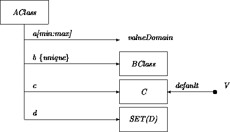
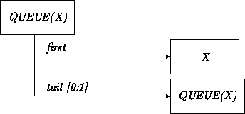
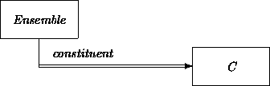
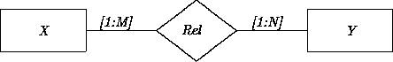
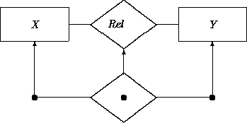
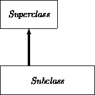
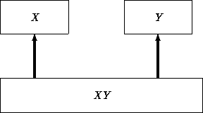
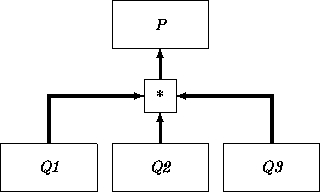
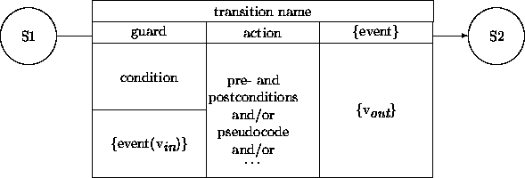
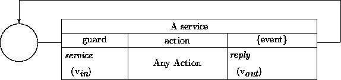
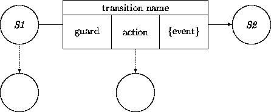
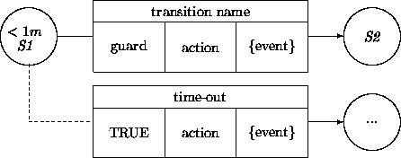
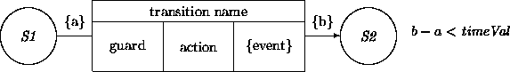
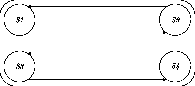
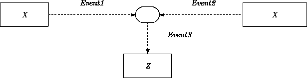
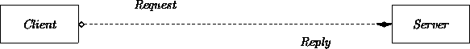
The following meaningless declarations illustrate principal ODL constructs.
class X % class declaration
is SuperX, SuperX2 % all superclasses
generator XGen; % All X constructions go through XGens
fn i: int; % value attribute
b: fixed bool; % shorten fn, qualify as constant
c: common char; % c is same for all X's
r: unique real; % r is different for all X's
inv i > 0; % invariant constraint
j: int = 3; % short form
init i = 2; % initial state constraint
d: int init= 3; % short form
local fn l: Y; % private link attribute
local m: opt Y; % short form; qualify as optional
own q: X; % fixed, unique, local
locals % qualify all enclosed decls as local
p : Int <> % bind link to int obj at construction
k: int { i + j } % computed attribute
fn gti(x: int) : bool % local fn with argument
= (x > i) % abstract definition
{ x > i } % concrete definition
end % end of locals section
op op1(x: int) : () % procedural operation
==> i' = x end % effect/postcondition
op op2(x: int) % one-way operation
==> p''? = x % eventual value held in p is x
{ p.set(x) } end % concrete action
op op3 % argumentless one-way
when i > 3 then % guard
m' = l % effect; prime for post-value
elsewhen null(m) then % alternate guard; see if bound
op2(d)' % referenced effect
elsewhen l in SubY then % true if l has features of SubY
pend % delay processing (queue request)
else end % empty effect
when i = 7 then % guarded set of concrete ops
op op4: int { % return integer value
reply 12; % reply to sender and continue
q.op2 } % invoke op2 on q
elsewhen i = 219 then % accept op5 only when i = 219
op op5: ok(),bad(i:int) % alternate terminations
{ if b then ok % conditional reply
else bad(2) end } % reply on second return channel
else % i.e., when i ~= 7 /\ i ~= 219
op op6 y: Y { % y is local name for result
local a: int := 1; % local value
y := YGen$mk; % ask any YGen to make a Y
while a > 0 do % loop
catch q.op4 % catch q.op4's reply by name
op ok { a: = 0 } % value update
op bad(i:int) {} % no action
end;
a := a - 1; % value update
end }
end
end
inv X = oneOf(X1, X2); % X1 and X2 fully partition X
record desc(a: A, b: B) % value-structuring record for messages
fn geti(x: X):int { x.i } % top-level operation
class List[T] ... end % generic class with type argument T
op clear[T](l: List[T]); % operation on any List class
The following EBNF syntax (with `` [...]'' for ``optional'' and `` [...]*'' for ``zero or more'') does not reflect static semantic restrictions discussed in the text.
System: [ Decl ]*
Decl: Class | Fn | Op | Inv | Init | Open | Gen | Locals | Accept | Rec | ;
Class: class GID [ is GIDs ] [ Decl ]* end
Fn: [ local | own | packed ] [ fn ] GID Params : QualType FnDef
Op: [ local ] op GID Params ReturnSpec OpDef
Inv: inv Exps
Init: init Exps
Open: opens GID
Gen: generator GID
Rec: record GID Params
Locals: locals [ Decl ]* end
Accept: when Exp then [ Op ]* ElseAccepts end
ElseAccepts: [ elsewhen Exp then [ Op ]* ]* else [ Op ]*
Params: [ ( ParamList ) ]
ParamList: GID : QualType [ , GID : QualType ]*
QualType: [ fixed | unique | common | opt ]* GID
ReturnSpec: [ [ ID ] : QualType | : Synch [ , Synch ]* ]
Synch: [ ID ] ( [ ParamList ] )
FnDef: [ [ init ] = Exp ] FnBind
FnBind: <> | Block | ;
OpDef: Block | Effect | ;
Effect: ==> OpSpec end | When
When: when Exp then OpSpec ElseWhens end
ElseWhens: [ elsewhen Exp then OpSpec ]* else OpSpec
OpSpec: [ When | Exps [ Block ] | Block ]
Block: { Statements }
Statements: Statement [ ; Statement ]*
Statement: [ Exp | Assign | Loc | Catch | While | If | Reply ]
Reply: reply [ Exp ]
While: while Exp do Statements end
If: if Exp then Statements ElsIfs end
ElsIfs: [ elsif Exp then Statements ]* [ else Statements ]
Catch: catch Exp [ Op ]* end
Assigns: Assign [ , Assign ]*
Assign: GID := Exp
Loc: local GID : QualType [ := Exp ]
Exps: Exp | Exp , Exps
Exp: [ @ ] Exp2
Exp2: [ Exp2 OrOp ] Exp3
OrOp: \/ | =>
Exp3: [ Exp3 /\ ] Exp4
Exp4: [ Exp5 RelOp ] Exp5
RelOp: = | < | > | ~ | >= | <=
Exp5: [ Exp5 AddOp ] Exp6
AddOp: + | -
Exp6: [ Exp6 MulOp ] Exp7
MulOp: * | / | div | mod
Exp7: [ Unop ]* Exp8
Unop: - | ~
Exp8: PredefFn | PredefExp | Msg | ( Exp )
PredefFn: Msg in GID | null ( Msg ) | oneOf ( GIDs )
PredefExp: true | false | null | pend | literal
Msg: Rcvr [ . Send ]* [ ' | '' | ? ]
Rcvr: self | [ GID $ ] Send | new GID [ ( [ Assigns|Exp ] ) ]
Send: GID [ ( [ Exps ] ) ]
GID: ID | GID [ Exps ] | PredefType
PredefType: bool | int | char | real | time | blob | Any | System
GIDs: GID [ , GID ]*
ID: [ ID :: ]* name